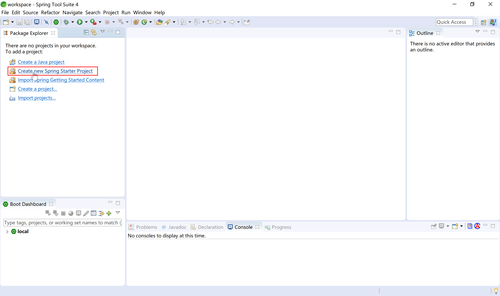
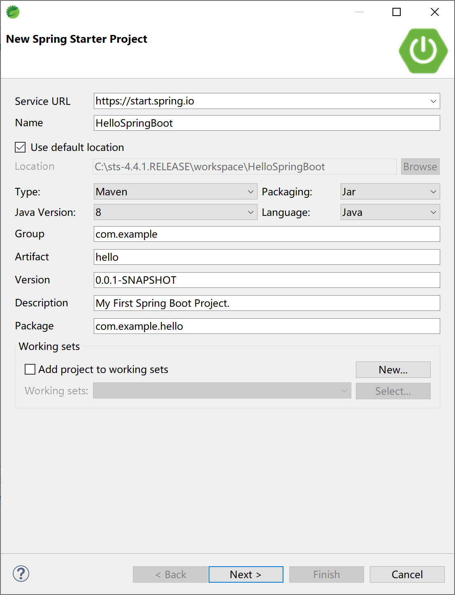
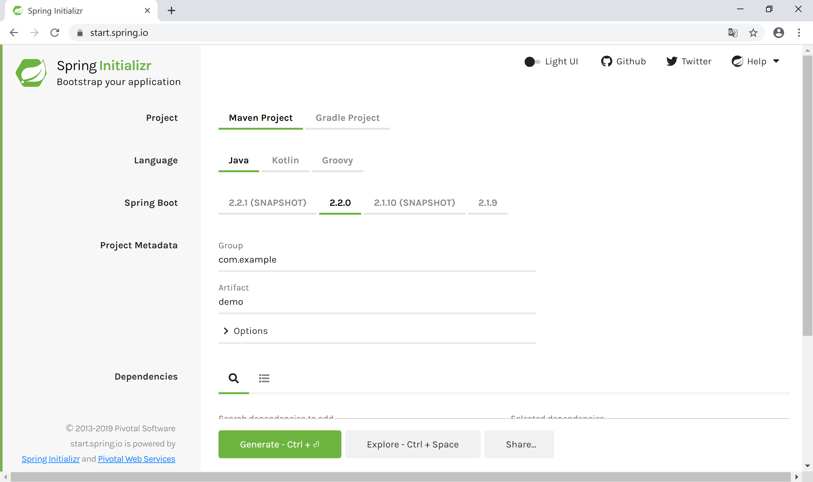

1.4 Hello Spring Boot
程序员都有“Hello world.”情结，我们在了解了Spring和Spring Boot的历史和特性之后，也以Spring Boot的“Hello world.”来感受我们后续将要学习的Spring Boot应用程序是如何开发的。
本小节的目的是为了给大家一个开发Spring Boot应用程序的初步印象，暂时没有开发环境，无法练习也没有关系，学习完第2章后返回来学习效果更好。
请参照本教程第2章的“开发环境配置”，完成本地开发环境的配置，然后再来“Hello Spring Boot.”。
1.4.1 创建项目
首先，我们创建一个Spring Starter工程，如下图所示：

输入项目名称、项目的GAV（maven依赖的坐标：Group、Artifact、Version）、Package等信息：

选择Spring Boot的版本，当前最新为2.2.0（截至2019年11月）：

其实，STS开发工具，是通过Eclipse插件连接到网络，根据我们之前给定的参数设定请求参数，然后在Spring官网生成项目骨架（starter.zip），这和在 start.spring.io 上生成项目骨架是完全一致的。

参考 start.spring.io 生成项目骨架，后台服务一定是相同的。

稍等片刻（如果网络不给力，有可能要等上好一阵子呢），maven会下载所有的依赖。
Spring官网为我们生成的pom.xml文件如下：
<?xml version="1.0" encoding="UTF-8"?>
<project xmlns="http://maven.apache.org/POM/4.0.0" xmlns:xsi="http://www.w3.org/2001/XMLSchema-instance"
xsi:schemaLocation="http://maven.apache.org/POM/4.0.0 https://maven.apache.org/xsd/maven-4.0.0.xsd">
<modelVersion>4.0.0</modelVersion>
<parent>
<groupId>org.springframework.boot</groupId>
<artifactId>spring-boot-starter-parent</artifactId>
<version>2.2.0.RELEASE</version>
<relativePath/> <!-- lookup parent from repository -->
</parent>
<groupId>com.example</groupId>
<artifactId>hello</artifactId>
<version>0.0.1-SNAPSHOT</version>
<name>HelloSpringBoot</name>
<description>My First Spring Boot Project.</description>
<properties>
<java.version>1.8</java.version>
</properties>
<dependencies>
<dependency>
<groupId>org.springframework.boot</groupId>
<artifactId>spring-boot-starter-web</artifactId>
</dependency>
<dependency>
<groupId>org.springframework.boot</groupId>
<artifactId>spring-boot-starter-test</artifactId>
<scope>test</scope>
<exclusions>
<exclusion>
<groupId>org.junit.vintage</groupId>
<artifactId>junit-vintage-engine</artifactId>
</exclusion>
</exclusions>
</dependency>
</dependencies>
<build>
<plugins>
<plugin>
<groupId>org.springframework.boot</groupId>
<artifactId>spring-boot-maven-plugin</artifactId>
</plugin>
</plugins>
</build>
</project>
需要注意的有几点：
- 第6-9行的spring-boot-starter-parent；
- 第22-25行的spring-boot-starter-web；
- 第42-45行的spring-boot-maven-plugin；
这些依赖，为我们大大简化了Spring应用程序的配置。当然，其中也隐藏了大量的魔法，在第3章中我们会简要的介绍这些魔法是怎么实现的，在这里，大家不要过度关注，不理解也不影响我们Say Hello to Spring Boot.
我们再来关注启动入口类HelloSpringBootApplication，这将是我们进入Spring Boot世界的第一道门。
package com.example.hello;
import org.springframework.boot.SpringApplication;
import org.springframework.boot.autoconfigure.SpringBootApplication;
@SpringBootApplication
public class HelloSpringBootApplication {
public static void main(String[] args) {
SpringApplication.run(HelloSpringBootApplication.class, args);
}
}
这里唯一陌生的，也是最需要关注的，当然就是@SpringBootApplication这个注解。它标识了这个类是个Spring Boot的应用程序。
这个类中有main方法，运行它看看效果：

虽然没有啥效果，但控制台打出的日志，表明，这个Spring Boot程序确实可以正确运行。
. ____ _ __ _ _
/\\ / ___'_ __ _ _(_)_ __ __ _ \ \ \ \
( ( )\___ | '_ | '_| | '_ \/ _` | \ \ \ \
\\/ ___)| |_)| | | | | || (_| | ) ) ) )
' |____| .__|_| |_|_| |_\__, | / / / /
=========|_|==============|___/=/_/_/_/
:: Spring Boot :: (v2.2.0.RELEASE)
2019-11-06 22:27:52.949 INFO 1704 --- [ main] c.e.hello.HelloSpringBootApplication : Starting HelloSpringBootApplication on NOTEBOOK-KEVIN with PID 1704 (C:\sts-4.4.1.RELEASE\workspace\HelloSpringBoot\target\classes started by Kevin in C:\sts-4.4.1.RELEASE\workspace\HelloSpringBoot)
2019-11-06 22:27:52.952 INFO 1704 --- [ main] c.e.hello.HelloSpringBootApplication : No active profile set, falling back to default profiles: default
2019-11-06 22:27:53.663 INFO 1704 --- [ main] o.s.b.w.embedded.tomcat.TomcatWebServer : Tomcat initialized with port(s): 8080 (http)
2019-11-06 22:27:53.671 INFO 1704 --- [ main] o.apache.catalina.core.StandardService : Starting service [Tomcat]
2019-11-06 22:27:53.672 INFO 1704 --- [ main] org.apache.catalina.core.StandardEngine : Starting Servlet engine: [Apache Tomcat/9.0.27]
2019-11-06 22:27:53.727 INFO 1704 --- [ main] o.a.c.c.C.[Tomcat].[localhost].[/] : Initializing Spring embedded WebApplicationContext
2019-11-06 22:27:53.728 INFO 1704 --- [ main] o.s.web.context.ContextLoader : Root WebApplicationContext: initialization completed in 736 ms
2019-11-06 22:27:53.861 INFO 1704 --- [ main] o.s.s.concurrent.ThreadPoolTaskExecutor : Initializing ExecutorService 'applicationTaskExecutor'
2019-11-06 22:27:54.019 INFO 1704 --- [ main] o.s.b.w.embedded.tomcat.TomcatWebServer : Tomcat started on port(s): 8080 (http) with context path ''
2019-11-06 22:27:54.021 INFO 1704 --- [ main] c.e.hello.HelloSpringBootApplication : Started HelloSpringBootApplication in 1.422 seconds (JVM running for 2.316)
1.4.2 编写Controller代码
下面，我们为这个程序添加一个Controller，输出“Hello Spring Boot.”这句话。
首先创建com.example.hello.controller包，然后在其下创建SayHelloController类，代码如下：
package com.example.hello.controller;
import org.springframework.web.bind.annotation.RequestMapping;
import org.springframework.web.bind.annotation.RestController;
@RestController
public class SayHelloController {
@RequestMapping("/hello")
public String sayHello() {
return "Hello Spring Boot.";
}
}
1.4.3 在IDE中运行
再次运行HelloSpringBootApplication这个类（当然，也可以说运行这个Spring Boot应用/程序），在控制台中输出的日志，已经包含DispatcherServlet这个Spring MVC的前端分发器类了。
. ____ _ __ _ _
/\\ / ___'_ __ _ _(_)_ __ __ _ \ \ \ \
( ( )\___ | '_ | '_| | '_ \/ _` | \ \ \ \
\\/ ___)| |_)| | | | | || (_| | ) ) ) )
' |____| .__|_| |_|_| |_\__, | / / / /
=========|_|==============|___/=/_/_/_/
:: Spring Boot :: (v2.2.0.RELEASE)
2019-11-06 22:33:48.882 INFO 7872 --- [ main] c.e.hello.HelloSpringBootApplication : Starting HelloSpringBootApplication on NOTEBOOK-KEVIN with PID 7872 (C:\sts-4.4.1.RELEASE\workspace\HelloSpringBoot\target\classes started by Kevin in C:\sts-4.4.1.RELEASE\workspace\HelloSpringBoot)
2019-11-06 22:33:48.891 INFO 7872 --- [ main] c.e.hello.HelloSpringBootApplication : No active profile set, falling back to default profiles: default
2019-11-06 22:33:49.558 INFO 7872 --- [ main] o.s.b.w.embedded.tomcat.TomcatWebServer : Tomcat initialized with port(s): 8080 (http)
2019-11-06 22:33:49.564 INFO 7872 --- [ main] o.apache.catalina.core.StandardService : Starting service [Tomcat]
2019-11-06 22:33:49.565 INFO 7872 --- [ main] org.apache.catalina.core.StandardEngine : Starting Servlet engine: [Apache Tomcat/9.0.27]
2019-11-06 22:33:49.613 INFO 7872 --- [ main] o.a.c.c.C.[Tomcat].[localhost].[/] : Initializing Spring embedded WebApplicationContext
2019-11-06 22:33:49.614 INFO 7872 --- [ main] o.s.web.context.ContextLoader : Root WebApplicationContext: initialization completed in 688 ms
2019-11-06 22:33:49.731 INFO 7872 --- [ main] o.s.s.concurrent.ThreadPoolTaskExecutor : Initializing ExecutorService 'applicationTaskExecutor'
2019-11-06 22:33:49.863 INFO 7872 --- [ main] o.s.b.w.embedded.tomcat.TomcatWebServer : Tomcat started on port(s): 8080 (http) with context path ''
2019-11-06 22:33:49.865 INFO 7872 --- [ main] c.e.hello.HelloSpringBootApplication : Started HelloSpringBootApplication in 1.262 seconds (JVM running for 1.873)
2019-11-06 22:33:59.678 INFO 7872 --- [nio-8080-exec-1] o.a.c.c.C.[Tomcat].[localhost].[/] : Initializing Spring DispatcherServlet 'dispatcherServlet'
2019-11-06 22:33:59.678 INFO 7872 --- [nio-8080-exec-1] o.s.web.servlet.DispatcherServlet : Initializing Servlet 'dispatcherServlet'
2019-11-06 22:33:59.686 INFO 7872 --- [nio-8080-exec-1] o.s.web.servlet.DispatcherServlet : Completed initialization in 8 ms
打开浏览器，访问localhost:8080/hello，可以正确得到前面Controller类中sayHello方法的输出：

恭喜你，你已经完成了你的第一个Spring Boot程序。
1.4.4 打包
当一个应用开发完成后，需要分发时，通常会将Spring Boot应用程序打包为一个jar包。
在STS中，选择Maven build...
在Maven build的目标（Goals）中输入clean package，为了更快的打包，勾选Skip Tests复选框。
正常情况下，稍等片刻，Maven就会完成打包操作，注意观察控制台输出的日志。
[INFO] BUILD SUCCESS表示Maven任务正确完成。
[INFO] Scanning for projects...
[INFO]
[INFO] -------------------------< com.example:hello >--------------------------
[INFO] Building HelloSpringBoot 0.0.1-SNAPSHOT
[INFO] --------------------------------[ jar ]---------------------------------
[INFO]
[INFO] --- maven-clean-plugin:3.1.0:clean (default-clean) @ hello ---
[INFO] Deleting C:\sts-4.4.1.RELEASE\workspace\HelloSpringBoot\target
[INFO]
[INFO] --- maven-resources-plugin:3.1.0:resources (default-resources) @ hello ---
[INFO] Using 'UTF-8' encoding to copy filtered resources.
[INFO] Copying 1 resource
[INFO] Copying 0 resource
[INFO]
[INFO] --- maven-compiler-plugin:3.8.1:compile (default-compile) @ hello ---
[INFO] Changes detected - recompiling the module!
[INFO] Compiling 2 source files to C:\sts-4.4.1.RELEASE\workspace\HelloSpringBoot\target\classes
[INFO]
[INFO] --- maven-resources-plugin:3.1.0:testResources (default-testResources) @ hello ---
[INFO] Not copying test resources
[INFO]
[INFO] --- maven-compiler-plugin:3.8.1:testCompile (default-testCompile) @ hello ---
[INFO] Not compiling test sources
[INFO]
[INFO] --- maven-surefire-plugin:2.22.2:test (default-test) @ hello ---
[INFO] Tests are skipped.
[INFO]
[INFO] --- maven-jar-plugin:3.1.2:jar (default-jar) @ hello ---
[INFO] Building jar: C:\sts-4.4.1.RELEASE\workspace\HelloSpringBoot\target\hello-0.0.1-SNAPSHOT.jar
[INFO]
[INFO] --- spring-boot-maven-plugin:2.2.0.RELEASE:repackage (repackage) @ hello ---
[INFO] Replacing main artifact with repackaged archive
[INFO] ------------------------------------------------------------------------
[INFO] BUILD SUCCESS
[INFO] ------------------------------------------------------------------------
[INFO] Total time: 3.251 s
[INFO] Finished at: 2019-11-08T11:29:53+08:00
[INFO] ------------------------------------------------------------------------
[WARNING] The requested profile "pom.xml" could not be activated because it does not exist.
打开项目文件目录下的target子目录，其中hello-0.0.1-SNAPSHOT.jar就是打包好的项目可运行jar包。
其中还有一个很小的
hello-0.0.1-SNAPSHOT.jar.original文件，就是项目编译的文件。而
hello-0.0.1-SNAPSHOT.jar是spring-boot-maven-plugin插件帮我们把依赖jar包和内嵌tomcat打包到一起了的fat jar。
打开hello-0.0.1-SNAPSHOT.jar这个fat jar文件，查看其BOOT-INF\lib目录，可以看到其依赖的各种jar包。
1.4.5 独立运行程序
Spring Boot打包出来的jar文件支持独立运行，执行java -jar，运行Hello Spring Boot程序。
java -jar hello-0.0.1-SNAPSHOT.jar
在命令提示符窗口中，可以看到这个Spring Boot程序正确启动了。
打开浏览器，访问localhost:8080/hello，同样可以正确得到前面Controller类中sayHello方法的输出。
如果当前端口（例如8080）被占用，需要在启动时指定服务器端口，可以通过--server.port=80来指定。
java -jar hello-0.0.1-SNAPSHOT.jar --server.port=80
更多Spring Boot的配置项，会在本教程的后续章节陆续介绍。
后续，我们会一步一步地介绍在实际工作中，如何使用Spring Boot集成我们常用的开发框架/类库。
本小节示例项目代码：
https://github.com/gyzhang/SpringBootCourseCode/tree/master/spring-boot-hello